Generated by ChatGPT on 2025-12-01
本課程聚焦於如何在 el-loom（Entropica Labs 的量子錯誤更正模擬框架）中，從「抽象穩定子定義」一路走到「具體的電路層測量循環」，並結合噪聲模型進行表面碼（surface code）的電路層模擬。內容包含：
el-loom 裡定義表面碼晶格、穩定子與測量輪次。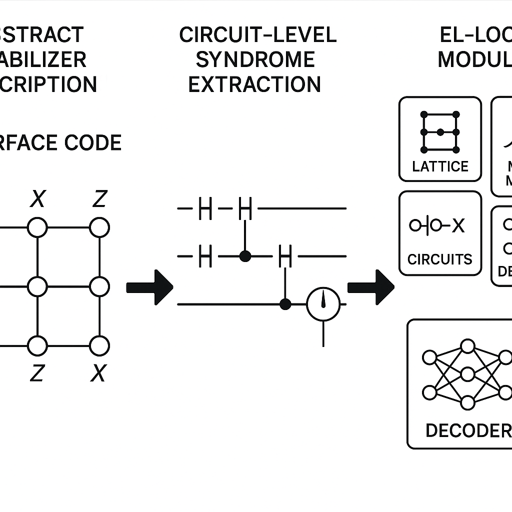
考慮一個 \(n\) 物理量子位元的 Pauli 群 \( \mathcal{P}_n \)： \[ \mathcal{P}_n = \{\pm 1, \pm i\} \times \{I, X, Y, Z\}^{\otimes n}. \] 一個穩定子碼（stabilizer code）由一個阿貝爾子群 \[ \mathcal{S} \subset \mathcal{P}_n, \quad -I \not\in \mathcal{S} \] 定義。碼空間為 \[ \mathcal{C} = \{ \ket{\psi} \in (\mathbb{C}^2)^{\otimes n} \mid S \ket{\psi} = \ket{\psi}, \ \forall S \in \mathcal{S}\}. \] 若 \( \mathcal{S} \) 由 \( m \) 個獨立生成元 \( \{S_1, \dots, S_m\} \) 生成，則碼空間維度為 \( 2^{n-m} \)，故可編碼 \[ k = n - m \] 個邏輯量子位元。邏輯保利算符 \( \bar{X}_j, \bar{Z}_j \) 為那些 \[ \bar{P} \in \mathcal{P}_n \setminus \mathcal{S} \] 且與所有穩定子對易但不在穩定子群中的運算子。
錯誤 \(E \in \mathcal{P}_n\) 若與部份穩定子反對易，則測量這些穩定子會產生 syndrome： \[ S_i E \ket{\psi} = \pm E \ket{\psi}. \] 測量結果 \( \pm 1 \) 對應二進位症候字串 \[ \mathbf{s} = (s_1,\dots,s_m), \quad s_i = \frac{1 - m_i}{2},\quad m_i \in \{+1,-1\}, \] 為後續解碼的關鍵輸入。
表面碼可視為在一個平面二維格點上的穩定子碼，其中物理 qubit 放在邊（edges）上，穩定子運算子對應於頂點（vertex）與面（plaquette）。最常見的版本是 square lattice surface code：
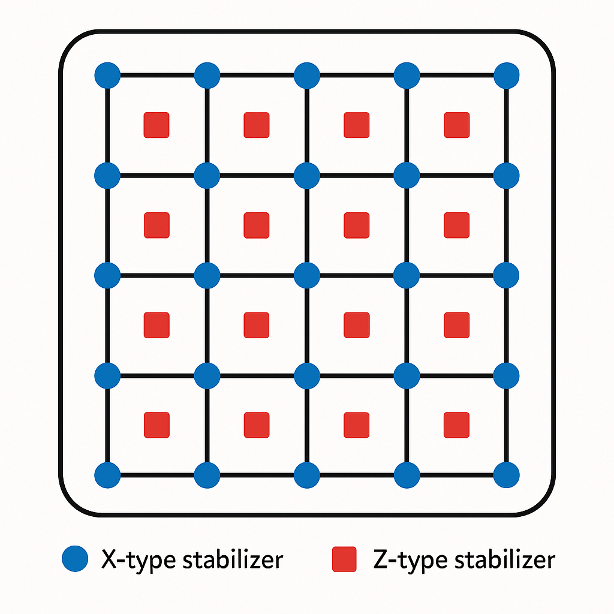
以距離 \(d\) 的 square patch 為例，粗略地，物理 qubit 數為 \(O(d^2)\)，可編碼 1 個邏輯 qubit，邏輯 \( \bar{Z} \) 可由垂直方向貫穿晶格的 \(Z\) 鏈構成，邏輯 \( \bar{X} \) 則為水平方向的 \(X\) 鏈。此拓樸結構導致表面碼對局域錯誤具有高容錯性。
在理想穩定子形式主義中，我們「假設」可以同時且無誤地測量所有穩定子 \(S_i\)。但在實際設備與細粒度電路模擬中，我們需要顯式地構造測量電路：
例如，對一個 \(Z\)-type 穩定子 \[ S_Z = Z_{i_1} Z_{i_2} \cdots Z_{i_w}, \] 其測量電路可以是：
對 \(X\)-type 穩定子 \[ S_X = X_{i_1} X_{i_2} \cdots X_{i_w}, \] 常見作法是：
這兩種電路在理想情況下都實現了測量對應穩定子 \(S\)，但在有噪聲時，閘序、布局與線路深度皆會影響錯誤的時空傳播行為，因而影響解碼與錯誤閾值。el-loom 的核心價值之一就在於能夠在「電路層」解析這些細節。
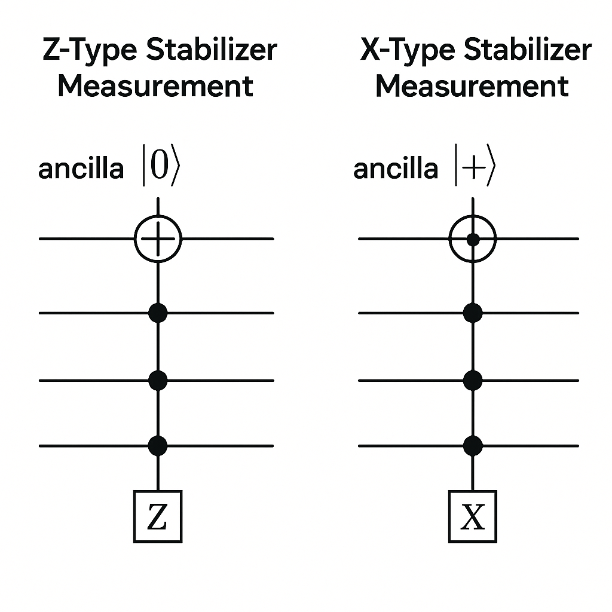
, CNOTs from data to ancilla, then Z measurement; (right) an X-type stabilizer measurement with ancilla in |+>, CNOTs from ancilla to data, then X measurement. Emphasize ancilla roles.">考慮一個 \(L \times L\) 的方格網，邊集合記為 \(E\)，頂點集合記為 \(V\)，面集合記為 \(F\)。每條邊 \(e \in E\) 上放置一個物理 qubit，數目 \[ n = |E|. \] 定義：
可以檢查所有 \(A_v\) 彼此對易，所有 \(B_f\) 彼此對易，且任何 \(A_v\) 與任意 \(B_f\) 也對易（除了共享奇數條邊時，需注意邊界條件；對 planar code 適當處理邊界後仍保對易）。整體穩定子群為 \[ \mathcal{S} = \langle \{A_v\}_{v \in V'}, \{B_f\}_{f \in F'} \rangle, \] 其中 \(V'\) 與 \(F'\) 為扣除線性依存關係後的生成元集合。對 planar code，最終得到 \(k=1\) 個邏輯 qubit。
給定一個 Pauli 錯誤 \[ E = \bigotimes_{e \in E} E_e, \qquad E_e \in \{I,X,Y,Z\}, \] 其 syndrome 為 \[ s_v = \begin{cases} 0, & A_v E = E A_v,\\ 1, & A_v E = - E A_v, \end{cases} \quad s_f = \begin{cases} 0, & B_f E = E B_f,\\ 1, & B_f E = - E B_f. \end{cases} \] 具體而言，若 \(E\) 含有某條邊 \(e\) 上的 \(Z\) 或 \(Y\) 錯誤，則與相鄰頂點的 \(A_v\) 反對易，對應於「X-syndrome」翻轉；若含有 \(X\) 或 \(Y\) 錯誤，則對應於相鄰面的 \(B_f\) syndrome 翻轉。這導致了經典圖論上的「錯誤鏈」與「缺陷端點（defects）」結構。
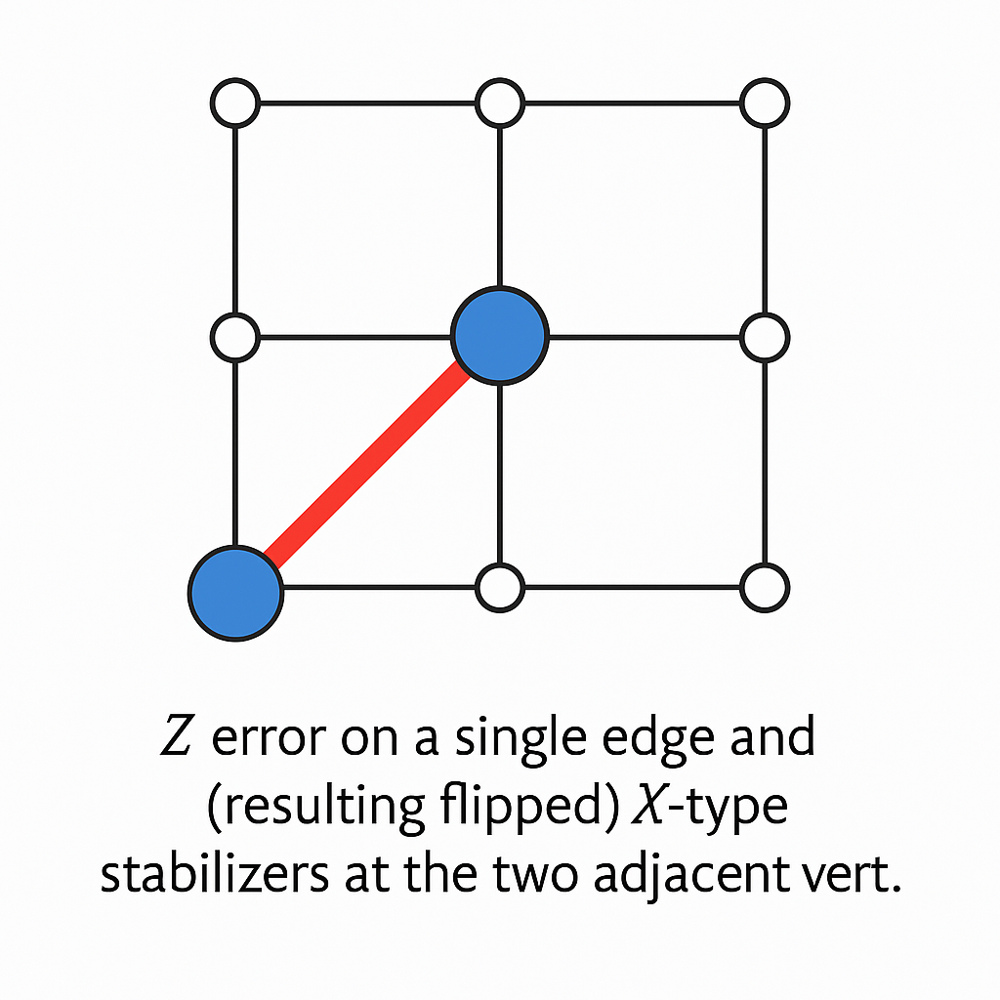
在時間序列的觀點，我們進行多輪 syndrome 測量，得到 \[ \mathbf{s}^{(t)} = \left( \{s_v^{(t)}\}_{v \in V}, \{s_f^{(t)}\}_{f \in F} \right), \quad t = 1, \dots, T. \] 即使在測量本身有錯誤的情況下，適當考慮時序維度後，整體仍可映射成一個三維（2D 空間 + 1D 時間）的錯誤圖，並使用最小權完美匹配（MWPM）等演算法解碼。這正是表面碼電路層模擬的重點：不僅需要空間結構，也要顯式存在時間軸。
以 \(Z\)-type 穩定子 \[ S_Z = Z_1 Z_2 Z_3 Z_4 \] 為例，其測量電路可有多種實作方式，只要滿足： \[ M_Z^{(\text{anc})} \circ \mathcal{U} (\rho \otimes \ket{0}\!\bra{0}) = \sum_{m = \pm 1} \Pi_m \rho \Pi_m \otimes \ket{m}\!\bra{m}, \] 其中 \(\Pi_m\) 為 \(S_Z\) 投影算符。標準作法為：
在理想（無噪聲）情況下，CNOT 的群論作用可形式化為： \[ \text{CNOT}_{i \to a}: \begin{cases} Z_i \mapsto Z_i,\\ Z_a \mapsto Z_i Z_a, \end{cases} \quad \Rightarrow Z_a \mapsto Z_1 Z_2 Z_3 Z_4 Z_a \] 在四個 CNOT 串接後，因此 \[ Z_a^{(\text{final})} = S_Z \cdot Z_a^{(\text{initial})}. \] 若初始 ancilla 為 \(+1\) 本徵態 \(Z_a \ket{0} = \ket{0}\)，則測量最終 ancilla 的 Z 本徵值即為 \(S_Z\) 的本徵值。
在有噪聲時，單一兩體 CNOT 閘可被視為理想 CNOT \(U_{\text{CNOT}}\) 加上一個通道 \(\mathcal{N}\)： \[ \mathcal{E}(\rho) = \mathcal{N} \bigl( U_{\text{CNOT}} \rho U_{\text{CNOT}}^\dagger \bigr). \] 若採用 Pauli 通道近似，例如雙邊隨機 Pauli 錯誤， \[ \mathcal{N}(\rho) = (1-p)\rho + \sum_{P \in \{X,Y,Z\}^{\otimes 2}} p_P P\rho P, \quad \sum_P p_P = p, \] 則可透過 Heisenberg picture 分析 Pauli 錯誤在電路中的傳播；例如，控制端的 \(X\) 錯誤在 CNOT 後： \[ X_c \mapsto X_c X_t, \] 故 \(X\) 錯誤可從 data qubit 傳至 ancilla。這些傳播路徑正是時間相關 syndrome 結構的來源。
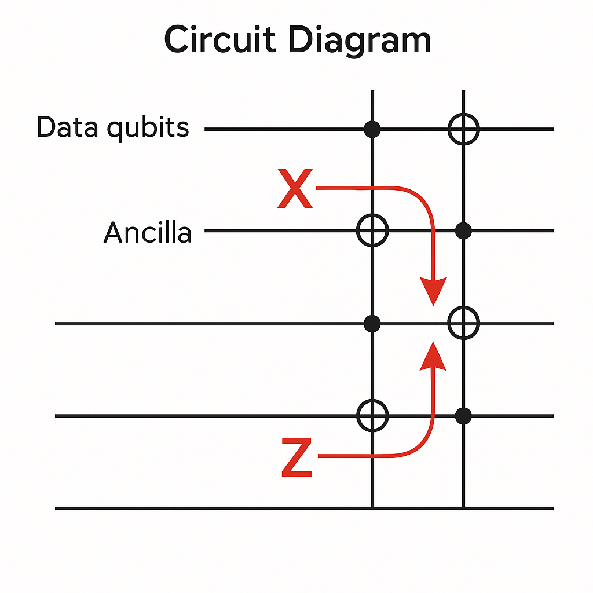
在表面碼中，測量每個穩定子需要一個 ancilla，且為了避免兩個穩定子的測量電路相互干擾，CNOT 時序與排程（scheduling）必須謹慎設計。這些時序設計在 el-loom 中會具體反映在「層」（layers）與「cycle」的實作。
在實際容錯運算場景中，我們會連續執行 syndrome 測量輪次
\[
t = 1, 2, \dots, T,
\]
每一輪包含所有頂點與面穩定子的測量。為了簡化實作，常令每一輪具有固定的閘序與排程。形式化地，可定義一個「測量循環超算符」：
\[
\mathcal{M} = \mathcal{M}_{\text{readout}} \circ \mathcal{U}_{\text{noise+gates}},
\]
其中 \(\mathcal{M}_{\text{readout}}\) 包含 ancilla 測量及其 classical outcome 的紀錄。
經過 \(T\) 輪測量後，整體演化為
\[
\rho^{(T)} = \bigl(\mathcal{M}\bigr)^T(\rho^{(0)}),
\]
同時取得 syndrome 串列
\[
\{\mathbf{s}^{(t)}\}_{t=1}^T.
\]
這正是 el-loom 中典型的「測量循環模擬」任務：給定初態、噪聲模型與測量電路，在多輪循環後生成 syndrome 時序與最終 logical 狀態（或 logical 錯誤事件）。
本節說明如何在 el-loom 中，從表面碼的抽象拓樸結構，建構出一個可供電路層模擬使用的「晶格」與穩定子資料結構。假設讀者已安裝 el-loom，並熟悉其 Python API 的基本語法。
el-loom 的原始碼在 GitHub：
pip install el-loom
整體架構（以典型使用流程為例）：
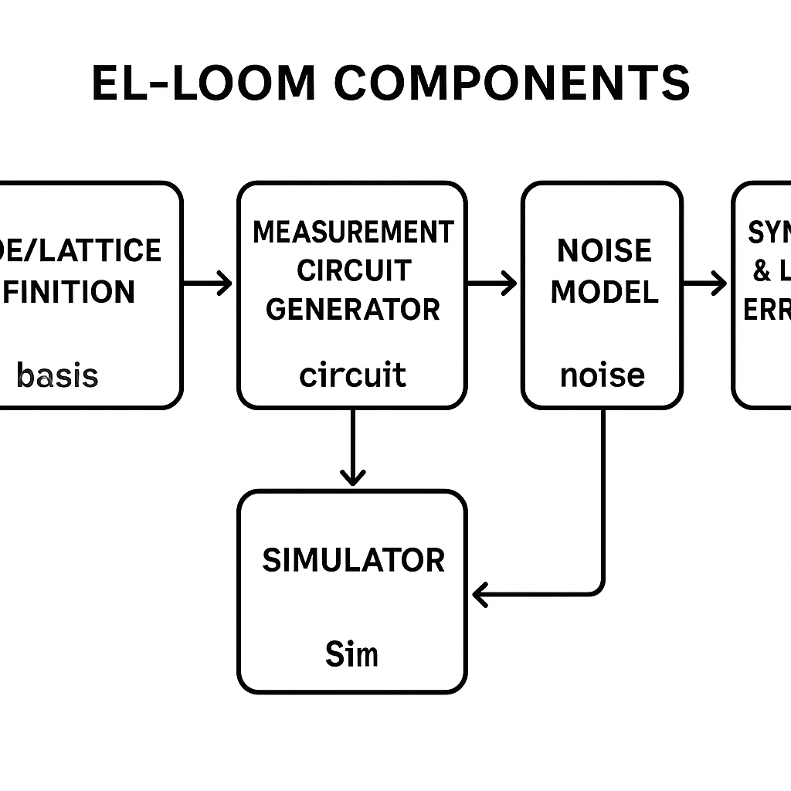
Measurement Circuit Generator -> Noise Model -> Simulator -> Syndrome & Logical Error Logs. Each block labeled with corresponding Python modules/classes in el-loom.">
el-loom 通常提供 surface code 的 code family，例如距離 \(d\) 的 planar code。概念上，我們可以做：
from loom.codes import SurfaceCode
d = 3 # code distance
code = SurfaceCode(distance=d, boundary='planar')
在內部，這會建立：
研究者如需變形 lattice（例如 rotated surface code、heavy-hex 等），可以透過 el-loom 的低階 API 自行定義 qubit 與 check 的幾何關係。這部分在進階研究中相當重要，因為實際硬體拓樸多半不是完美的 square lattice。
為了講解如何在 el-loom 中精確控制結構，我們示範手動定義一個最小的距離 3 planar code patch（只為教學示意，實際 API 名稱請依官方文件為準）。假設有：
Stabilizer 表示。from loom.lattice import Lattice, Stabilizer
lat = Lattice()
# 新增 data qubits
data_ids = [0, 1, 2, 3, 4, 5, 6] # example
for q in data_ids:
lat.add_data_qubit(q)
# 新增 ancilla qubits
ancilla_x = [100, 101, 102]
ancilla_z = [200, 201, 202]
for q in ancilla_x + ancilla_z:
lat.add_ancilla_qubit(q)
# 定義一個 Z-type 穩定子作用在 data qubits 0,1,3,4
stab_z0 = Stabilizer(
kind='Z',
data_support=[0, 1, 3, 4],
ancilla=200
)
lat.add_stabilizer(stab_z0)
# 類似地新增其他 X-/Z-stabilizers
...
實際 el-loom 中，Lattice 物件可能包含更豐富的結構，例如：
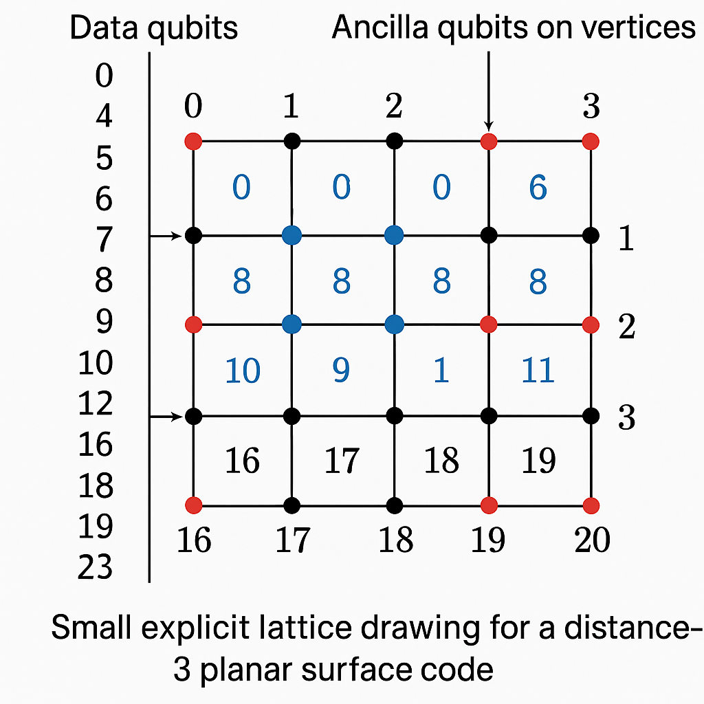
在抽象層次，一輪 surface code 測量循環包含：
在 el-loom 中，這通常被封裝成一個「cycle object」或「measurement round」描述，然後轉譯為底層的門序列（gate list 或 circuit object）。例如（示意）：
from loom.circuits import MeasurementCycleBuilder
builder = MeasurementCycleBuilder(lattice=lat)
cycle = builder.build_standard_surface_code_cycle(
schedule='canonical', # or 'checkerboard', custom, etc.
)
此處 schedule 參數會決定各 CNOT 的 time slot，確保沒有 qubit 同時參與多個閘，同時盡可能壓低總深度。對於 square lattice surface code 的標準實作，常使用 4-step 或 8-step CNOT 排程。
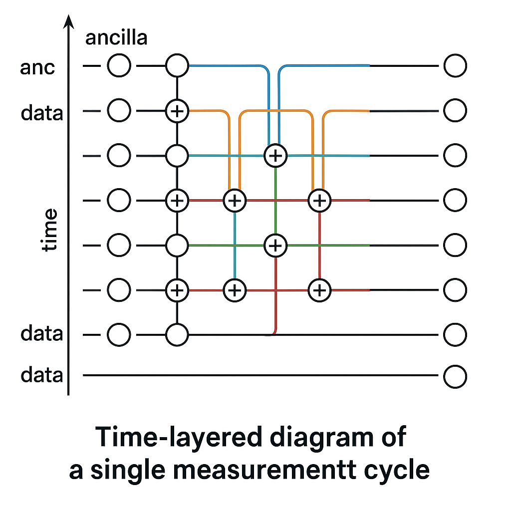
在較底層的 API 中，一輪循環可用一串門操作描述，例如：
from loom.circuits import Circuit
circ = Circuit()
# 1. 初始化 ancilla
for q in ancilla_z:
circ.add_reset(q, basis='Z') # |0>
for q in ancilla_x:
circ.add_reset(q, basis='X') # |+>, often implemented as |0> then H
# 2. CNOT scheduling
for timeslot in schedule:
for (ctrl, tgt) in timeslot.cnot_pairs:
circ.add_cnot(ctrl, tgt)
# 3. 測量 ancilla
for q in ancilla_z:
circ.add_measure(q, basis='Z')
for q in ancilla_x:
circ.add_measure(q, basis='X')
在 surface code 中，一般會令同類型穩定子（如所有 X-stabilizer 或所有 Z-stabilizer）共享相同的「CNOT layer 結構」。而 el-loom 通常已為 standard surface code 提供預設排程，研究者只需在必要時覆寫或擴充。
對於任一固定循環電路 \(C\)，我們希望它在理想情況下實現以下 POVM： \[ \{ \Pi_{\mathbf{s}} \}_{\mathbf{s} \in \{0,1\}^m} \] 其中每個 element 為 \[ \Pi_{\mathbf{s}} = \prod_{i=1}^m \frac{1}{2}(I + (-1)^{s_i} S_i), \] \(S_i\) 為穩定子生成元。也就是說：
在 circuit 模型中，測量循環定義了量子通道 \[ \mathcal{M}(\rho) = \sum_{\mathbf{s}} \mathrm{Tr}_a [\mathcal{K}_{\mathbf{s}} (\rho \otimes \ket{0}\!\bra{0}^{\otimes m})] \otimes \ket{\mathbf{s}}\!\bra{\mathbf{s}}, \] 其中 \(\mathcal{K}_{\mathbf{s}}\) 包含整個 unitary + projection 的組合。若 CNOT 排程沒有彼此干擾（例如不同穩定子對同一 data qubit 的作用順序在 ideal case 下僅改變局部虛相位），則可證明： \[ \Pi_{\mathbf{s}} = \mathrm{Tr}_a \left[ K_{\mathbf{s}}^\dagger K_{\mathbf{s}} \right], \] 其中 \(K_{\mathbf{s}}\) 為相對應 Kraus operator。這證明測量循環對應於理想的穩定子測量 POVM。
在 el-loom 實作過程中，我們可透過：
以距離 3 的最小例子，隨機取 100 個碼空間態，施加隨機單 qubit Pauli 錯誤 \(E \in \{I,X,Y,Z\}\)，執行一次測量循環，檢查 syndrome 是否與 \(E\) 對應的「端點」結構一致，即可驗證 el-loom 中 cycle 結構的正確性。
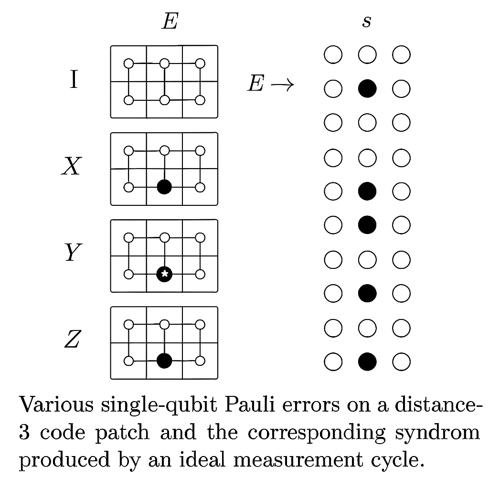
s.">
el-loom 提供多種噪聲模型組件，概念上可拆為：
在數學上，可用 Kraus operator 或超算符描述。以最常見的兩體 depolarizing 通道為例：
\[
\mathcal{D}_p^{(2)}(\rho) = (1-p)\rho + \frac{p}{15} \sum_{P \in \mathcal{P}_2 \setminus \{II\}} P\rho P.
\]
這可以近似真實硬體的 CNOT gate noise。el-loom 會將此與特定閘關聯，形成一個 noisy gate 模型：
在程式層面，常見用法為先建立一個 noise configuration，再將之套用到電路模擬器上，如：
from loom.noise import NoiseModel
noise = NoiseModel()
# 單 qubit gate noise
noise.set_1q_gate_noise(
p=1e-4, # error probability
model='depolarizing'
)
# 兩 qubit gate noise (e.g., CNOT)
noise.set_2q_gate_noise(
p=5e-3,
model='depolarizing'
)
# 測量錯誤：讀出 bit-flip
noise.set_measurement_noise(
p=1e-3,
model='bitflip'
)
# 若有 idle noise / T1T2
noise.set_idle_noise(T1=50e-6, T2=60e-6, gate_time=20e-9)
之後，在執行測量循環模擬時：
from loom.sim import CircuitSimulator
sim = CircuitSimulator(noise_model=noise)
# 建立 measurement cycle circuit
cycle = builder.build_standard_surface_code_cycle(...)
# 執行 T 輪
T = 20
syndrome_records = []
state = code.initial_state() # or logical |0_L>, etc.
for t in range(T):
result = sim.run(cycle, init_state=state)
syndrome_records.append(result.syndrome)
state = result.final_state # optional, if tracking full state
針對大尺寸 code 或長時間序列，完整追蹤密度矩陣或狀態向量代價過高，el-loom 一般會採用更高效率的 Pauli frame tracking 或 stabilizer simulation 技術。在數學上，很多標準噪聲模型（Pauli 通道）在 Clifford 電路下穩定封閉（stabilizer formalism closed under Clifford + Pauli noise），因此可以以 \(O(n^3)\) 或更佳的複雜度跟蹤 syndrome 與 logical operator 的轉換。
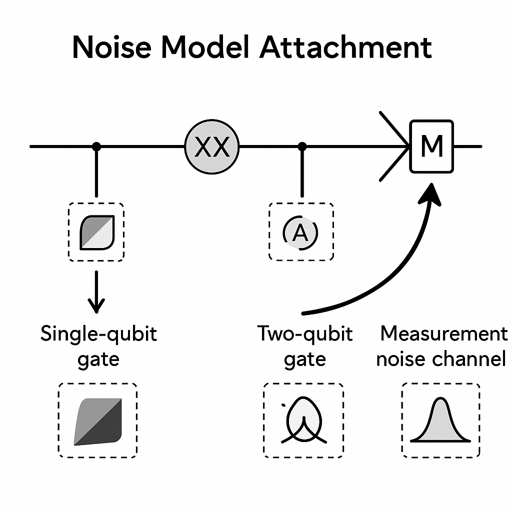
在噪聲存在下，觀測到的 syndrome \(\mathbf{s}^{(t)}\) 不再只依賴 data qubit 錯誤；測量本身與 ancilla 錯誤也會導致 syndrome「雜訊」。在理想情況下，對每輪測量有： \[ \mathbf{s}^{(t)} = \mathbf{s}_{\text{data}}^{(t)} \oplus \mathbf{s}_{\text{meas}}^{(t)}, \] 其中 \(\mathbf{s}_{\text{data}}^{(t)}\) 由當輪與過去輪次累積的 data 錯誤決定，\(\mathbf{s}_{\text{meas}}^{(t)}\) 則是測量／ancilla 錯誤造成的「假陽性」。在時間維度上，典型解碼器會使用空間–時間圖結構；例如 3D MWPM 將 syndrome 變化當作「缺陷端點」，並於空間–時間中進行匹配。
在 el-loom 中，我們可以直接取得每輪 syndrome：
# syndrome_records[t][i]: i-th stabilizer outcome at round t
進一步，可將這些 syndrome 餵給外部解碼器（如 PyMatching）的 Python 介面。此處 el-loom 主要提供的是準確的、帶有電路層噪聲的 syndrome time series。
下面給出一個相對具體的端到端流程範例：在距離 3 planar surface code 上，構建標準測量循環與噪聲模型，並執行多輪 syndrome 模擬。（請注意：具體類別與函式名稱需以官方文件為準，下列為教學式 pseudo-API。）
from loom.codes import SurfaceCode
from loom.circuits import MeasurementCycleBuilder
from loom.noise import NoiseModel
from loom.sim import CircuitSimulator
# 1. 建立距離 3 planar surface code
d = 3
code = SurfaceCode(distance=d, boundary='planar')
lattice = code.lattice
data_qubits = lattice.data_qubits()
ancilla_x = lattice.ancilla_x()
ancilla_z = lattice.ancilla_z()
# 2. 建立 surface code 測量循環
builder = MeasurementCycleBuilder(lattice=lattice)
cycle = builder.build_standard_surface_code_cycle(
schedule='canonical_4step'
)
此處 canonical_4step 表示採用一個 4 層 CNOT 排程，每個穩定子在每一層與其中一個 data qubit 互動，整體確保：
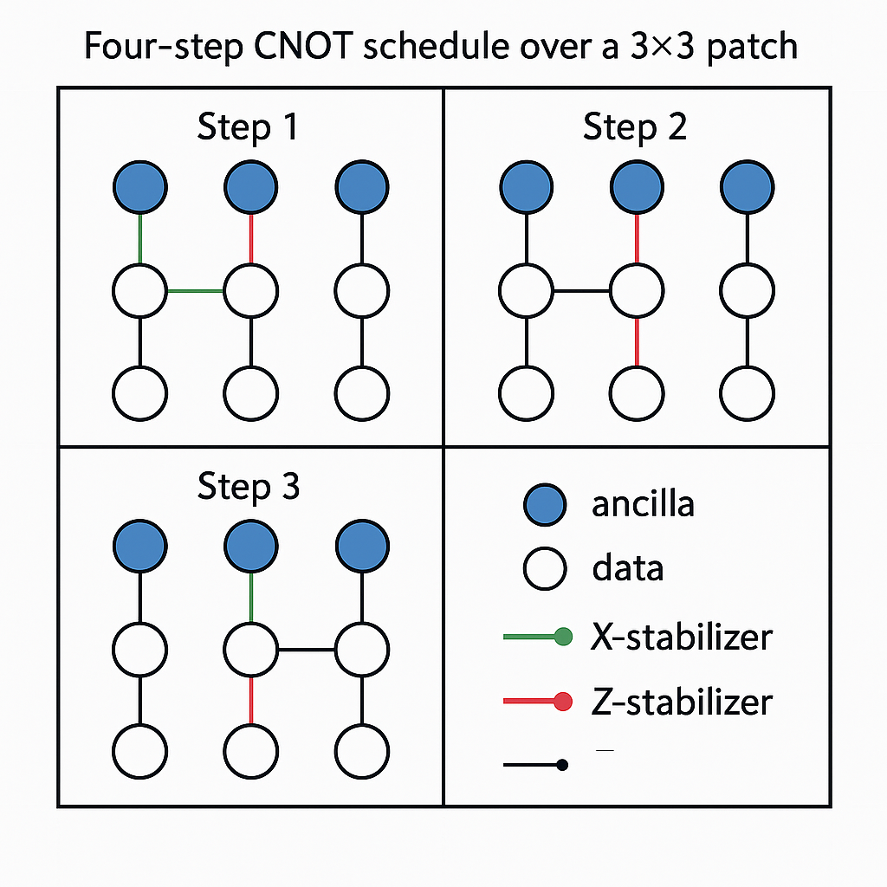
# 3. 定義噪聲模型
noise = NoiseModel()
noise.set_1q_gate_noise(p=1e-4, model='depolarizing')
noise.set_2q_gate_noise(p=5e-3, model='depolarizing')
noise.set_measurement_noise(p=1e-3, model='bitflip')
noise.set_idle_noise(T1=50e-6, T2=60e-6, gate_time=20e-9)
sim = CircuitSimulator(noise_model=noise)
假設我們欲模擬邏輯 \(\ket{\bar{0}}\) 狀態在 \(T\) 輪測量循環中的表現。我們可令初態為：
\[
\rho^{(0)} = \ket{\bar{0}}\!\bra{\bar{0}}.
\]
在 el-loom 中，可能有直接建立 logical state 的 API：
state = code.logical_state('0') # or code.encode(|0> logical)
T = 30
syndrome_records = []
logical_flips = []
for t in range(T):
result = sim.run(cycle, init_state=state)
syndrome_records.append(result.syndrome)
state = result.final_state
# 選擇性：在每輪後測試 logical Z 的期望值，估計是否發生 logical X 錯誤
exp_ZL = code.expect_logical_Z(state)
# 例如簡單判斷 sign flip 作為邏輯錯誤 proxy（實務通常會用 decoder）
logical_flips.append(1 if exp_ZL < 0 else 0)
在更典型的工作流程中，logical 錯誤判斷應透過解碼器完成：給定所有 syndrome \(\{\mathbf{s}^{(t)}\}\)，求得最有可能的 Pauli frame 並比較與實際錯誤鏈是否存在邏輯差異。在 el-loom 生產環境中，通常會與解碼器框架（如 PyMatching 或內建 decoder）整合。
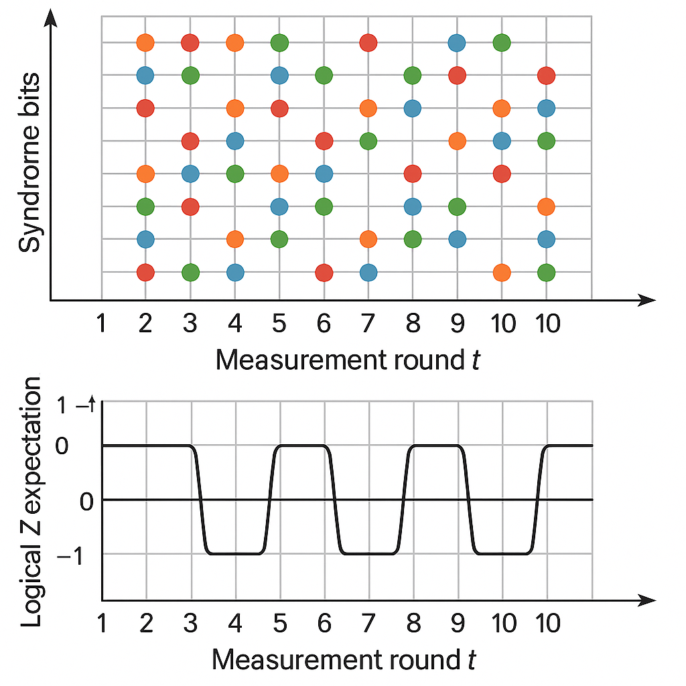
理論上，只要電路正確實現穩定子測量 POVM，在無噪聲下不同循環方案是等價的。然而，在有噪聲的實際情境中：
這些差異會直接反映在 logical error rate 與閾值估計上。el-loom 是進行這類比較的理想工具：我們可實作多種 cycle 版本，在同樣的 noise model 下模擬，並比較 logical failure probability。
假設我們有兩種不同的 CNOT 排程：
schedule='canonical_4step'schedule='optimized_hook_suppression'可簡單建構兩種 cycle：
cycle_A = builder.build_standard_surface_code_cycle(
schedule='canonical_4step'
)
cycle_B = builder.build_standard_surface_code_cycle(
schedule='optimized_hook_suppression'
)
然後針對同樣的距離 \(d\)、噪聲強度 \(p\)、輪數 \(T\)，統計 logical failure rate：
def estimate_logical_failure(cycle, trials=1000, T=30):
failures = 0
for _ in range(trials):
state = code.logical_state('0')
all_syndromes = []
for t in range(T):
res = sim.run(cycle, init_state=state)
all_syndromes.append(res.syndrome)
state = res.final_state
# decode and check logical error
if has_logical_error(all_syndromes):
failures += 1
return failures / trials
pA = estimate_logical_failure(cycle_A)
pB = estimate_logical_failure(cycle_B)
print("Canonical schedule logical error rate:", pA)
print("Optimized schedule logical error rate:", pB)
其中 has_logical_error 代表一個外部或內建解碼器。實作上，可將 syndrome 投給 MWPM 解碼器求得估計錯誤鏈 \(\hat{E}\)，並檢查 \(\hat{E} E\) 是否含非平凡邏輯運算子（例如 \(\bar{X}\) 或 \(\bar{Z}\)）。
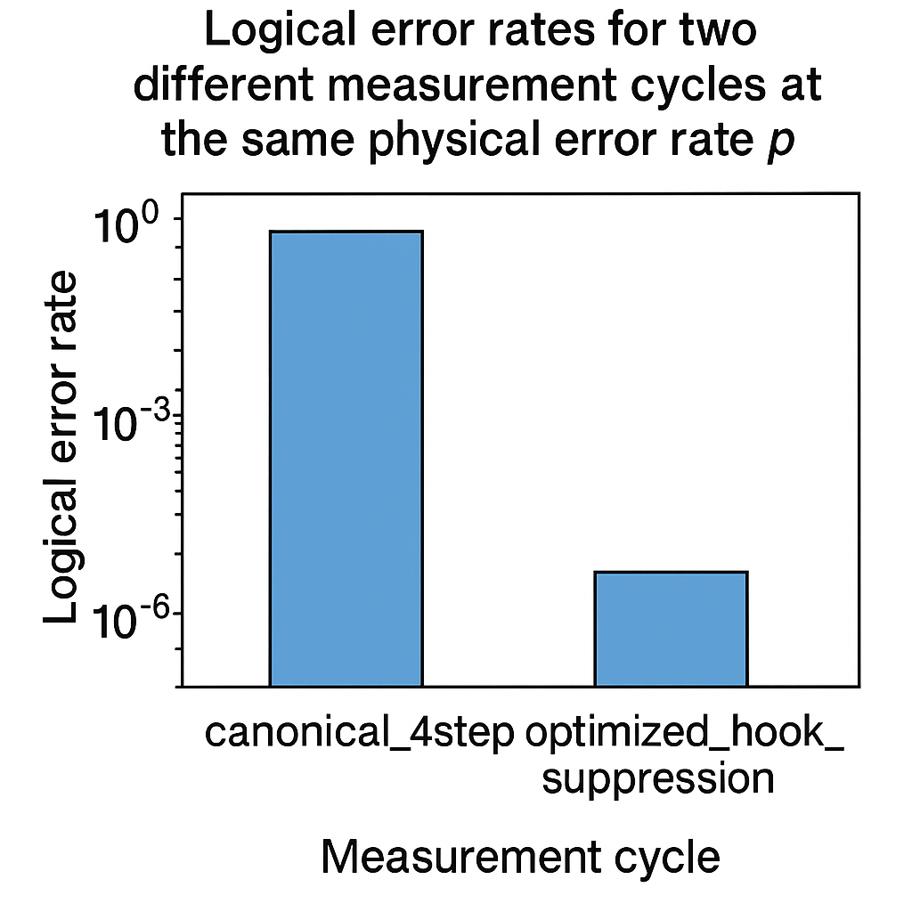
所謂 hook error，指的是由於 CNOT 排程某種組合，使得原本單一物理錯誤（例如一個 ancilla 上的錯誤）透過多個 CNOT 傳播到多個 data qubits 上，形成一個「勾形」錯誤鏈，其權重可能接近或等於 code distance，從而在解碼時更難被偵測。
形式化而言，若在某 ancilla \(a\) 上發生一個 \(X_a\) 錯誤，經過兩個連續 CNOT（\(a\) 為控制，\(d_1, d_2\) 為目標）： \[ X_a \xrightarrow{\text{CNOT}_{a\to d_1}} X_a X_{d_1} \xrightarrow{\text{CNOT}_{a\to d_2}} X_a X_{d_1} X_{d_2}. \] 進一步與其他 CNOT 交纏，可能產生 weight-3 甚至更高的 correlated error。透過適當設計排程，確保特定 Pauli error 只會在「短距離」內傳播，可以在一定程度上抑制 hook error，提升閾值。
el-loom 允許我們在電路層精確插入單一 Pauli 錯誤並追蹤其最終作用；例如：
from loom.debug import inject_pauli_error
cycle_hook_test = builder.build_standard_surface_code_cycle(
schedule='candidate_schedule'
)
# 在特定 time step t0、ancilla q 上注入 X error
inj_cycle = inject_pauli_error(cycle_hook_test, qubit=q, pauli='X', time=t0)
res = sim.run(inj_cycle, init_state=code.logical_state('0'),
noise_model=None) # no additional noise
final_pauli = analyze_final_error(res)
print("Effective weight of propagated error:", final_pauli.weight())
如此可對照不同 schedule 的 hook error 傳播情形，從而在理論與實作上優化測量循環。
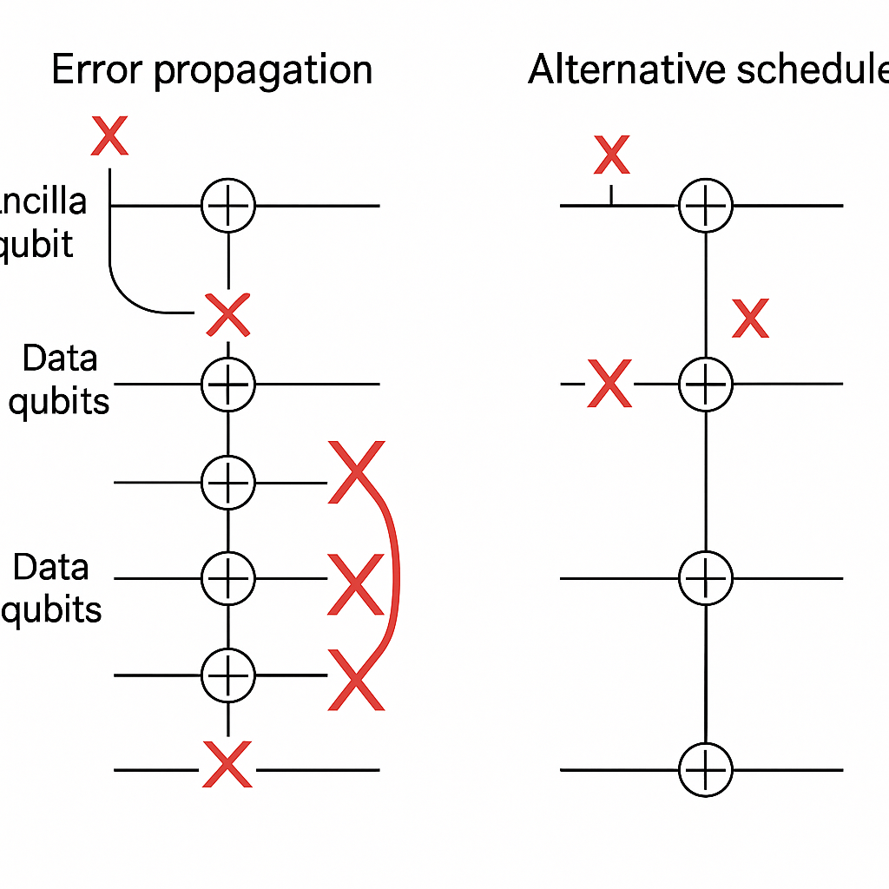
本課程從穩定子形式主義與表面碼拓樸結構出發，推導了表面碼穩定子測量與測量循環的數學基礎，並說明在電路層如何實作這些測量電路，進一步介紹如何在 el-loom 中：
對博士生與研究者而言，el-loom 在表面碼研究上的主要價值在於：
建議的進一步延伸方向包括：
el-loom 中實作 rotated surface code 與 XZZX code，並比較在 biased noise 下的表現。el-loom 與高階容錯方案（如 lattice surgery、magic state distillation）連結，進行端到端容錯成本估計。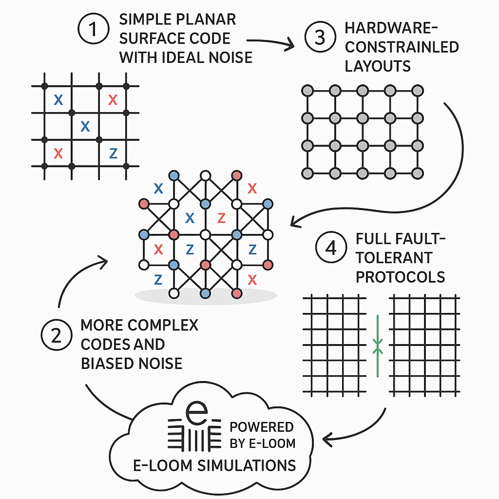
透過上述框架，你可以在 el-loom 中系統性地探索「表面碼 + 電路層噪聲 + 實際測量循環」三者的交互作用，從而為下一代容錯量子計算架構的設計提供定量依據。
逐字稿下載：ChatGPT_zh_L03_表面碼與電路層模擬_在_el_loom_中構建測量循環.txt
完整音檔：
Segment 1:
Segment 2:
Segment 3:
Segment 4:
Segment 5:
Segment 6:
Segment 7:
Segment 8:
Segment 9:
Segment 10:
Segment 11:
Segment 12:
Segment 13:
Segment 14:
Segment 15:
Segment 16:
Segment 17: